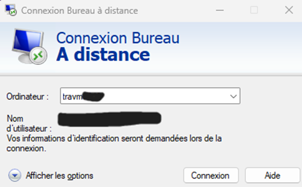
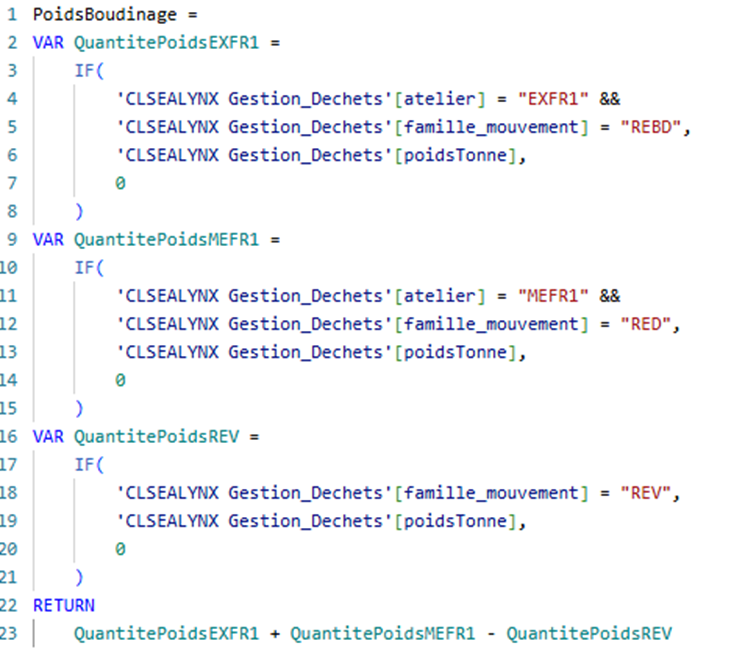
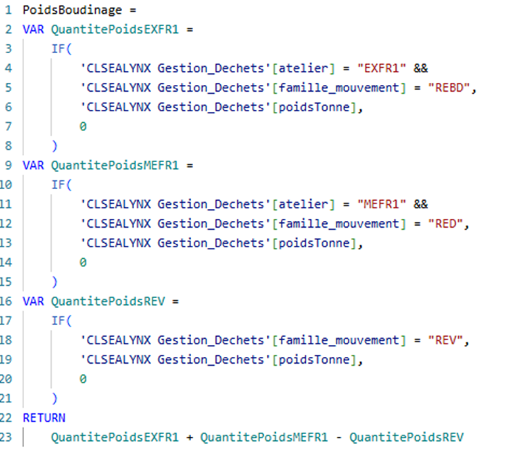

Rapport de Stage
SFC Solutions.
L'Entreprise : SFC Solutions Automotive France
SFC Solutions est une SAS (Société par Actions Simplifiée), experte dans le développement et la fabrication de systèmes d’étanchéité pour le secteur automobile.
Mission : Assurer la protection des véhicules (bruit, poussière, eau).
Membre d’Amaneos, acteur mondial de l’industrie automobile.
Le Projet HSE (Hygiène Sécurité Environnement)
Objectif : Mettre en place un suivi des flux de déchets sur le site Transières en France via Power BI.
Types de déchets suivis :
Environnement Technique
-
💻 Matériel :
PC Portable DELL + Écran -
🗄️ Serveur :
Distant (Datawarehouse) -
💾 SGBD :
SQL Server -
🔄 ETL :
Talend Open Studio -
📊 Visualisation :
Power BI Desktop
Planning Prévisionnel

1. Connexion & ETL (Talend)
Accès au serveur Datawarehouse.
Construction du Job ETL :
- • Prejobs : Connexion BDD + Envoi d'e-mail.
- • tDBinput_1 : Lecture sources.
- • tMap : Nettoyage et transformation.
- • tDBoutput2 : Injection cible.
- • Postjobs : Déconnexion + Confirmation.

2. SQL & Visualisation
Création d'une vue SQL massive regroupant toutes les tables et vues nécessaires.
📄 Voir la Requête SQL ComplexeLiaison de la vue SQL avec Power BI Desktop.

Création de colonnes calculées via le langage DAX.
 

Résultat Final
Création complète de 6 pages de rapport.


Compétences Développées (BTS SIO)
- ✅ Exploiter des références, normes et standards
- ✅ Recenser et identifier les ressources numériques
- ✅ Traiter des demandes concernant les services réseau et systèmes applicatifs
- ✅ Planifier les activités
- ✅ Évaluer les indicateurs de suivi et analyser les écarts
- ✅ Déployer un service
- ✅ Accompagner les utilisateurs dans la mise en place